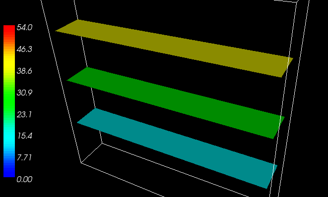
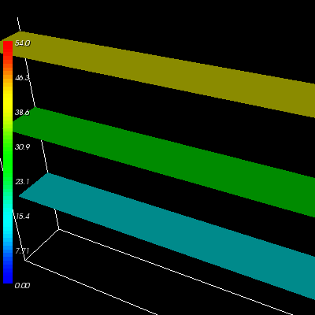
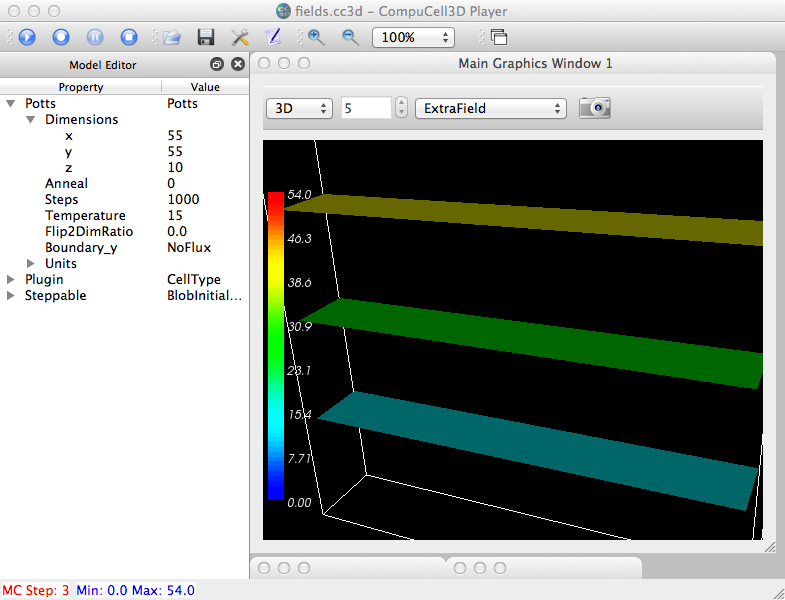
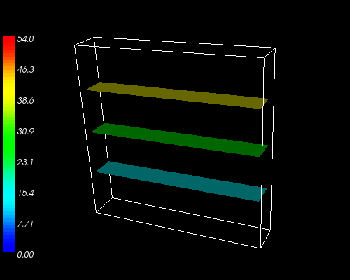
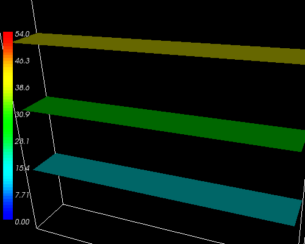
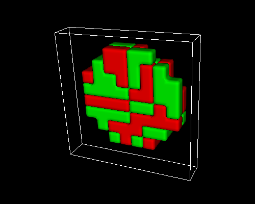
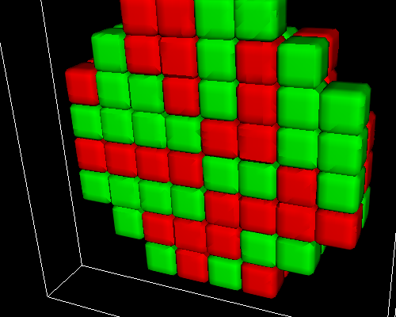
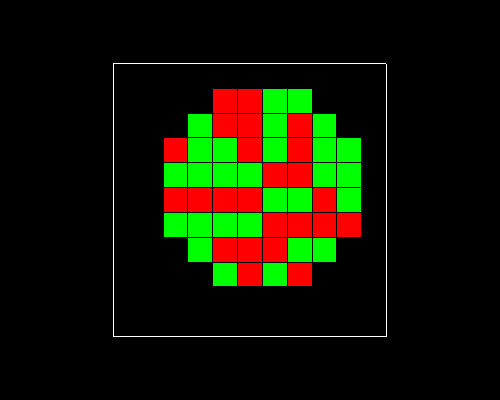
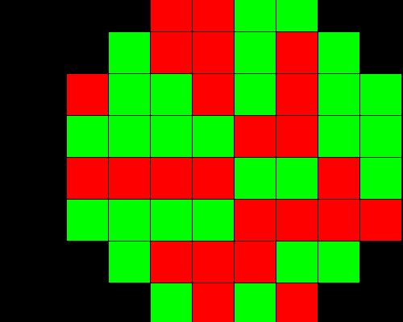

If we simply use the Prefs:Output panel to "Save image...", it will faithfully reproduce a .png image that looks like the Main Graphics Window (1st image below). However, if we also click the camera icon (at top of graphics window) to save this window's image (to an appropriately named subdir in the output dir), it will NOT be a faithful reproduction; rather, it tries to rescale the contents and also generates a fixed image size (2nd image). (Refer to Multiwindow_images also)


This uses the following test model:
~/dev/Glazier/debug/fields$ ty fields.cc3d
<Simulation version="3.5.1">
<XMLScript>Simulation/fields.xml</XMLScript>
<PythonScript>Simulation/fields.py</PythonScript>
<Resource Type="Python">Simulation/fields_steppables.py</Resource>
<Resource Type="ScalarField">Simulation/diffusion_2D.pulse.txt</Resource>
</Simulation>
~/dev/Glazier/debug/fields$ ty Simulation/fields_steppables.py
from PySteppables import *
import CompuCell
import sys
from PlayerPython import *
from math import *
class ExtraFieldVisualizationSteppable(SteppableBasePy):
def __init__(self,_simulator,_frequency=10):
SteppableBasePy.__init__(self,_simulator,_frequency)
def setScalarField(self,_field):
self.scalarField=_field
def start(self):pass
def step(self,mcs):
clearScalarField(self.dim,self.scalarField)
for x in xrange(self.dim.x):
for y in xrange(self.dim.y):
for z in xrange(self.dim.z):
value = y+mcs
fillScalarValue(self.scalarField, x,y,z,value)
...other classes too...
Where does all this code live?
~/dev/Glazier/cc3d-git-8-27-12/player$ grep outputScreenshots */*/*.py
Plugins/ViewManagerPlugins/ScreenshotManager.py: def outputScreenshots(self,_generalScreenshotDirectoryName,_mcs): # called from SimpleTabView:handleCompletedStep{Regular,CML*}
Plugins/ViewManagerPlugins/ScreenshotManager.py:# print MODULENAME, 'outputScreenshots(): _generalScreenshotDirectoryName=',_generalScreenshotDirectoryName
Plugins/ViewManagerPlugins/ScreenshotManager.py: print MODULENAME,'outputScreenshots(): type(winsize), [0],[1]=',type(winsize),winsize[0],winsize[1]
Plugins/ViewManagerPlugins/ScreenshotManager.py:# print MODULENAME,'outputScreenshots(): dir(self.screenshotGraphicsWidget.qvtkWidget)=',dir(self.screenshotGraphicsWidget.qvtkWidget)
Plugins/ViewManagerPlugins/ScreenshotManager.py:# print MODULENAME,'outputScreenshots(): dir(self.screenshotGraphicsWidget.qvtkWidget.GetRenderWindow())=',dir(self.screenshotGraphicsWidget.qvtkWidget.GetRenderWindow())
Plugins/ViewManagerPlugins/ScreenshotManager.py: print MODULENAME,'outputScreenshots(): self.screenshotGraphicsWidget.qvtkWidget.GetRenderWindow().GetSize()=',self.screenshotGraphicsWidget.qvtkWidget.GetRenderWindow().GetSize()
Plugins/ViewManagerPlugins/ScreenshotManager.py:# print MODULENAME,'outputScreenshots(): win size=', self.tabViewWidget.mainGraphicsWindow.size() # PyQt4.QtCore.QSize(367, 378)
Plugins/ViewManagerPlugins/ScreenshotManager.py: print MODULENAME,'outputScreenshots(): scrName =',scrName # e.g. FGF_ConField_2D_XY_0 (i.e. subdir name)
Plugins/ViewManagerPlugins/ScreenshotManager.py: print MODULENAME,'outputScreenshots(): scrData.screenshotGraphicsWidget.size().width(), height() =',scrData.screenshotGraphicsWidget.size().width(),scrData.screenshotGraphicsWidget.size().height() # 100,30 ?!
Plugins/ViewManagerPlugins/ScreenshotManager.py:# print MODULENAME,'outputScreenshots(): scrData.spaceDimension =',scrData.spaceDimension # 2D
Plugins/ViewManagerPlugins/SimpleTabView.py: self.screenshotManager.outputScreenshots(self.screenshotDirectoryName,self.__step)
Plugins/ViewManagerPlugins/SimpleTabView.py: self.screenshotManager.outputScreenshots(self.screenshotDirectoryName,self.__step)
I think I've fixed this problem (at least to some degree). If we now pan/zoom/rotate(if 3D) the player graphics window to the desired orientation and then click the camera icon (top border of graphics window), it should save images rendered using this orientation (and window size).
For example, if we have the following situation (using the model/steppable from above) and click the camera icon, the correctly rendered images (below) should be dumped. (After clicking the camera icon, one could then select a different field and click the camera icon for that, etc).

this results in the following images being saved (in ~/CC3DWorkspace/<modelname-datetimestamp>/<fieldname...>/*.png:


Notice that the very first image saved will most likely be incorrect, in the sense that it will be automatically re-scaled, but the rest should retain the orientation used in the player graphics window.
We should note that once the camera icon has been clicked for a field, it is not possible to change anything in that graphics window and then re-click the camera icon to override the previous. Future work...
Similarly, we show how we change to the Cell_Field, view it as a 3D projection (rotated/zoomed/panned) and click the camera icon to save those images, then switch to a 2D projection (XY) (zoomed/panned) and click the camera icon to save those images:




Note that are issues with turning on cell borders (Vis menu) for the 2D projection and also having that apply to the 3D rendering.